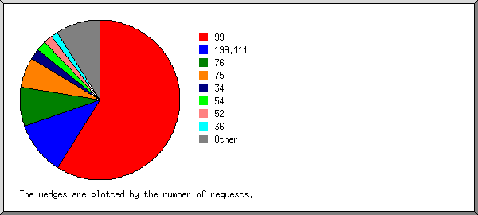
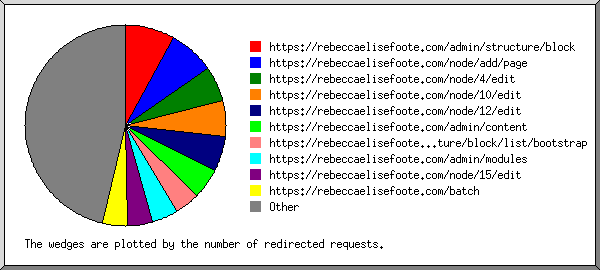
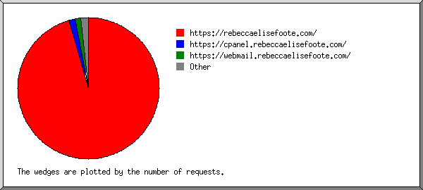
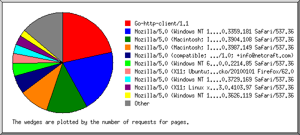
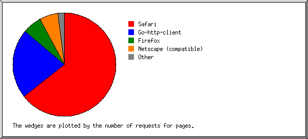
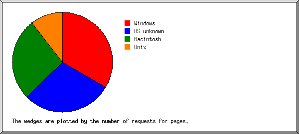
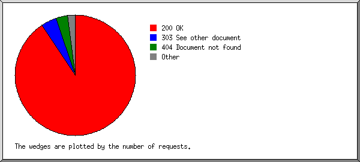
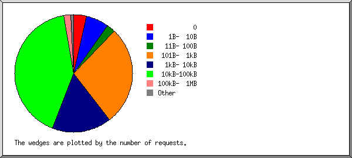
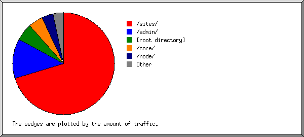
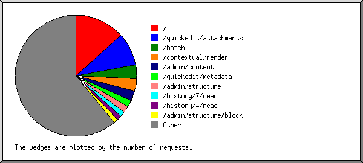

Web Server Statistics for rebeccaelisefoote.com
Web Server Statistics for rebeccaelisefoote.com
Program started on Tue, Mar 31 2020 at 1:20 PM.
Analyzed requests from Fri, Jan 31 2020 at 12:08 PM to Tue, Mar 31 2020 at 2:40 AM (59.61 days).
Web Server Statistics for rebeccaelisefoote.comProgram started on Tue, Mar 31 2020 at 1:20 PM.
Analyzed requests from Fri, Jan 31 2020 at 12:08 PM to Tue, Mar 31 2020 at 2:40 AM (59.61 days).
(Go To: Top | General Summary | Monthly Report | Daily Summary | Hourly Summary | Domain Report | Organization Report | Redirected Referrer Report | Failed Referrer Report | Referring Site Report | Browser Report | Browser Summary | Operating System Report | Status Code Report | File Size Report | File Type Report | Directory Report | Request Report)
Figures in parentheses refer to the 7-day period ending Mar 31 2020 at 1:20 PM.
Successful requests: 766 (8)
Average successful requests per day: 12 (1)
Successful requests for pages: 142 (7)
Average successful requests for pages per day: 2 (0)
Failed requests: 77 (0)
Redirected requests: 30 (0)
Distinct files requested: 272 (331)
Distinct hosts served: 43 (57)
Data transferred: 26.18 megabytes (47.55 kilobytes)
Average data transferred per day: 449.77 kilobytes (6.79 kilobytes)
(Go To: Top | General Summary | Monthly Report | Daily Summary | Hourly Summary | Domain Report | Organization Report | Redirected Referrer Report | Failed Referrer Report | Referring Site Report | Browser Report | Browser Summary | Operating System Report | Status Code Report | File Size Report | File Type Report | Directory Report | Request Report)
Each unit ( ) represents 3 requests for pages or part thereof.
) represents 3 requests for pages or part thereof.
| month | #reqs | #pages | |
|---|---|---|---|
| Jan 2020 | 12 | 12 |  |
| Feb 2020 | 644 | 83 |   |
| Mar 2020 | 110 | 47 | |
Busiest month: Feb 2020 (83 requests for pages).
(Go To: Top | General Summary | Monthly Report | Daily Summary | Hourly Summary | Domain Report | Organization Report | Redirected Referrer Report | Failed Referrer Report | Referring Site Report | Browser Report | Browser Summary | Operating System Report | Status Code Report | File Size Report | File Type Report | Directory Report | Request Report)
Each unit () represents 1 request for a page.
| day | #reqs | #pages | |
|---|---|---|---|
| Sun | 21 | 15 |  |
| Mon | 14 | 13 | |
| Tue | 10 | 10 | |
| Wed | 249 | 23 | |
| Thu | 353 | 32 |  |
| Fri | 88 | 25 | |
| Sat | 31 | 24 | |
(Go To: Top | General Summary | Monthly Report | Daily Summary | Hourly Summary | Domain Report | Organization Report | Redirected Referrer Report | Failed Referrer Report | Referring Site Report | Browser Report | Browser Summary | Operating System Report | Status Code Report | File Size Report | File Type Report | Directory Report | Request Report)
Each unit () represents 1 request for a page.
| hour | #reqs | #pages | |
|---|---|---|---|
| 0 | 14 | 7 | |
| 1 | 6 | 6 | |
| 2 | 77 | 26 | |
| 3 | 22 | 13 | |
| 4 | 10 | 10 | |
| 5 | 2 | 2 | |
| 6 | 1 | 1 | |
| 7 | 0 | 0 | |
| 8 | 4 | 4 | |
| 9 | 16 | 10 | |
| 10 | 2 | 1 | |
| 11 | 0 | 0 | |
| 12 | 27 | 7 | |
| 13 | 121 | 10 | |
| 14 | 9 | 1 | |
| 15 | 3 | 3 | |
| 16 | 9 | 3 | |
| 17 | 8 | 2 | |
| 18 | 77 | 3 | |
| 19 | 158 | 10 | |
| 20 | 25 | 2 | |
| 21 | 3 | 3 | |
| 22 | 93 | 11 | |
| 23 | 79 | 7 | |
(Go To: Top | General Summary | Monthly Report | Daily Summary | Hourly Summary | Domain Report | Organization Report | Redirected Referrer Report | Failed Referrer Report | Referring Site Report | Browser Report | Browser Summary | Operating System Report | Status Code Report | File Size Report | File Type Report | Directory Report | Request Report)
Listing domains, sorted by the amount of traffic.
| #reqs | %bytes | domain |
|---|---|---|
| 766 | 100% | [unresolved numerical addresses] |
(Go To: Top | General Summary | Monthly Report | Daily Summary | Hourly Summary | Domain Report | Organization Report | Redirected Referrer Report | Failed Referrer Report | Referring Site Report | Browser Report | Browser Summary | Operating System Report | Status Code Report | File Size Report | File Type Report | Directory Report | Request Report)

Listing the top 20 organizations by the number of requests, sorted by the number of requests.
| #reqs | %bytes | organization |
|---|---|---|
| 255 | 20.31% | 199.111 |
| 187 | 29.86% | 76 |
| 148 | 24.77% | 75 |
| 57 | 19.55% | 99 |
| 34 | 0.04% | 52 |
| 17 | 35 | |
| 15 | 2.22% | 23 |
| 10 | 2.21% | 34 |
| 10 | 0.08% | 93 |
| 6 | 0.05% | 45 |
| 5 | 0.56% | 54 |
| 5 | 0.03% | 66.249 |
| 3 | 138.246 | |
| 2 | 0.15% | 62.210 |
| 2 | 0.02% | 38 |
| 1 | 0.04% | 181.215 |
| 1 | 0.03% | 209.239 |
| 1 | 158.174 | |
| 1 | 0.01% | 18 |
| 1 | 138.197 | |
| 5 | 0.06% | [not listed: 5 organizations] |
(Go To: Top | General Summary | Monthly Report | Daily Summary | Hourly Summary | Domain Report | Organization Report | Redirected Referrer Report | Failed Referrer Report | Referring Site Report | Browser Report | Browser Summary | Operating System Report | Status Code Report | File Size Report | File Type Report | Directory Report | Request Report)

Listing referring URLs, sorted by the number of redirected requests.
(Go To: Top | General Summary | Monthly Report | Daily Summary | Hourly Summary | Domain Report | Organization Report | Redirected Referrer Report | Failed Referrer Report | Referring Site Report | Browser Report | Browser Summary | Operating System Report | Status Code Report | File Size Report | File Type Report | Directory Report | Request Report)

Listing referring URLs, sorted by the number of failed requests.
| #reqs | URL |
|---|---|
| 2 | https://rebeccaelisefoote.com/node/preview/067e3f76-6398-4d27-a40f-0b2e37bf1754/full |
| 1 | https://rebeccaelisefoote.com/ |
(Go To: Top | General Summary | Monthly Report | Daily Summary | Hourly Summary | Domain Report | Organization Report | Redirected Referrer Report | Failed Referrer Report | Referring Site Report | Browser Report | Browser Summary | Operating System Report | Status Code Report | File Size Report | File Type Report | Directory Report | Request Report)

Listing referring sites, sorted by the number of requests.
| #reqs | site |
|---|---|
| 644 | https://rebeccaelisefoote.com/ |
| 9 | https://cpanel.x.reclaimhosting.com/ |
(Go To: Top | General Summary | Monthly Report | Daily Summary | Hourly Summary | Domain Report | Organization Report | Redirected Referrer Report | Failed Referrer Report | Referring Site Report | Browser Report | Browser Summary | Operating System Report | Status Code Report | File Size Report | File Type Report | Directory Report | Request Report)

Listing browsers with at least 1 request for a page, sorted by the number of requests for pages.
| #reqs | #pages | browser |
|---|---|---|
| 55 | 55 | Go-http-client/1.1 |
| 647 | 40 | Mozilla/5.0 (Macintosh; Intel Mac OS X 10_15_1) AppleWebKit/537.36 (KHTML, like Gecko) Chrome/78.0.3904.108 Safari/537.36 |
| 15 | 10 | Mozilla/5.0 (X11; Ubuntu; Linux x86_64; rv:62.0) Gecko/20100101 Firefox/62.0 |
| 5 | 5 | Mozilla/5.0 (Windows NT 10.0; Win64; x64) AppleWebKit/537.36 (KHTML, like Gecko) Chrome/74.0.3729.169 Safari/537.36 |
| 4 | 4 | Mozilla/5.0 (Windows NT 10.0; Win64; x64)AppleWebKit/537.36 (KHTML, like Gecko) Chrome/66.0.3359.181 Safari/537.36 |
| 3 | 3 | Mozilla/5.0 (Windows NT 6.1; Win64; x64) AppleWebKit/537.36 (KHTML, like Gecko) Chrome/40.0.2214.85 Safari/537.36 |
| 2 | 2 | Mozilla/5.0 (X11; Ubuntu; Linux x86_64; rv:58.0) Gecko/20100101 Firefox/58.0 |
| 2 | 2 | Mozilla/5.0 (Windows NT 6.3; WOW64) AppleWebKit/537.36 (KHTML, like Gecko) Chrome/41.0.2225.0 Safari/537.36 |
| 1 | 1 | Mozilla/5.0 (iPhone; CPU iPhone OS 10_3_3 like Mac OS X) AppleWebKit/603.1.30 (KHTML, like Gecko) CriOS/61.0.3163.73 Mobile/14G60 Safari/602.1 |
| 1 | 1 | python-requests/2.21.0 |
| 7 | 1 | Mozilla/5.0 (iPhone; CPU iPhone OS 13_1 like Mac OS X) AppleWebKit/605.1.15 (KHTML, like Gecko) Version/13.0.1 Mobile/15E148 Safari/604.1 |
| 2 | 1 | Mozilla/5.0 (X11; Linux x86_64) AppleWebKit/537.36 (KHTML, like Gecko) Chrome/58.0.3029.110 Safari/537.36 |
| 1 | 1 | Mozilla/5.0 (Windows NT 10.0; Win64; x64; rv:71.0) Gecko/20100101 Firefox/71.0 |
| 1 | 1 | Mozilla/5.0 (Macintosh; Intel Mac OS X 10.12; rv:52.0) Gecko/20100101 Firefox/52.0 |
| 1 | 1 | Mozilla/5.0 (Macintosh; Intel Mac OS X 10_12_3) AppleWebKit/602.4.8 (KHTML, like Gecko) Version/10.0.3 Safari/602.4.8 |
| 1 | 1 | Mozilla/5.0 (iPhone; CPU iPhone OS 10_3_1 like Mac OS X) AppleWebKit/603.1.30 (KHTML, like Gecko) Version/10.0 Mobile/14E304 Safari/602.1 |
| 1 | 1 | Mozilla/5.0 (Windows NT 6.1; WOW64; rv:31.0) Gecko/20130401 Firefox/31.0 |
| 1 | 1 | Mozilla/5.0 (Linux; Android 4.4.3; KFTHWI Build/KTU84M) AppleWebKit/537.36 (KHTML, like Gecko) Silk/47.1.79 like Chrome/47.0.2526.80 Safari/537.36 |
| 1 | 1 | Mozilla/5.0 (Windows NT 6.1; WOW64) AppleWebKit/537.36 (KHTML, like Gecko) Chrome/53.0.2785.143 Safari/537.36 |
| 5 | 0 | [not listed: 1 browser] |
(Go To: Top | General Summary | Monthly Report | Daily Summary | Hourly Summary | Domain Report | Organization Report | Redirected Referrer Report | Failed Referrer Report | Referring Site Report | Browser Report | Browser Summary | Operating System Report | Status Code Report | File Size Report | File Type Report | Directory Report | Request Report)

Listing browsers with at least 1 request for a page, sorted by the number of requests for pages.
| # | #reqs | #pages | browser |
|---|---|---|---|
| 1 | 675 | 61 | Safari |
| 665 | 57 | Safari/537 | |
| 3 | 3 | Safari/602 | |
| 7 | 1 | Safari/604 | |
| 2 | 55 | 55 | Go-http-client |
| 55 | 55 | Go-http-client/1 | |
| 3 | 20 | 15 | Firefox |
| 15 | 10 | Firefox/62 | |
| 2 | 2 | Firefox/58 | |
| 1 | 1 | Firefox/71 | |
| 1 | 1 | Firefox/31 | |
| 1 | 1 | Firefox/52 | |
| 4 | 1 | 1 | python-requests |
| 1 | 1 | python-requests/2 | |
| 5 | 0 | [not listed: 1 browser] |
(Go To: Top | General Summary | Monthly Report | Daily Summary | Hourly Summary | Domain Report | Organization Report | Redirected Referrer Report | Failed Referrer Report | Referring Site Report | Browser Report | Browser Summary | Operating System Report | Status Code Report | File Size Report | File Type Report | Directory Report | Request Report)

Listing operating systems, sorted by the number of requests for pages.
| # | #reqs | #pages | OS |
|---|---|---|---|
| 1 | 61 | 56 | OS unknown |
| 2 | 658 | 45 | Macintosh |
| 3 | 17 | 17 | Windows |
| 10 | 10 | Windows NT | |
| 7 | 7 | Unknown Windows | |
| 4 | 20 | 14 | Unix |
| 20 | 14 | Linux |
(Go To: Top | General Summary | Monthly Report | Daily Summary | Hourly Summary | Domain Report | Organization Report | Redirected Referrer Report | Failed Referrer Report | Referring Site Report | Browser Report | Browser Summary | Operating System Report | Status Code Report | File Size Report | File Type Report | Directory Report | Request Report)

Listing status codes, sorted numerically.
| #reqs | status code |
|---|---|
| 766 | 200 OK |
| 30 | 303 See other document |
| 9 | 401 Authentication required |
| 1 | 403 Access forbidden |
| 67 | 404 Document not found |
(Go To: Top | General Summary | Monthly Report | Daily Summary | Hourly Summary | Domain Report | Organization Report | Redirected Referrer Report | Failed Referrer Report | Referring Site Report | Browser Report | Browser Summary | Operating System Report | Status Code Report | File Size Report | File Type Report | Directory Report | Request Report)

| size | #reqs | %bytes |
|---|---|---|
| 0 | 56 | |
| 1B- 10B | 41 | |
| 11B- 100B | 11 | |
| 101B- 1kB | 197 | 0.42% |
| 1kB- 10kB | 127 | 2.00% |
| 10kB-100kB | 315 | 38.32% |
| 100kB- 1MB | 16 | 12.39% |
| 1MB- 10MB | 3 | 46.88% |
(Go To: Top | General Summary | Monthly Report | Daily Summary | Hourly Summary | Domain Report | Organization Report | Redirected Referrer Report | Failed Referrer Report | Referring Site Report | Browser Report | Browser Summary | Operating System Report | Status Code Report | File Size Report | File Type Report | Directory Report | Request Report)

Listing extensions with at least 0.1% of the traffic, sorted by the amount of traffic.
| #reqs | %bytes | extension |
|---|---|---|
| 22 | 48.60% | .png [PNG graphics] |
| 397 | 24.15% | [no extension] |
| 67 | 18.07% | .js [JavaScript code] |
| 142 | 5.46% | [directories] |
| 49 | 1.55% | .css [Cascading Style Sheets] |
| 74 | 1.35% | .svg |
| 5 | 0.74% | .php [PHP] |
| 10 | 0.07% | [not listed: 3 extensions] |
(Go To: Top | General Summary | Monthly Report | Daily Summary | Hourly Summary | Domain Report | Organization Report | Redirected Referrer Report | Failed Referrer Report | Referring Site Report | Browser Report | Browser Summary | Operating System Report | Status Code Report | File Size Report | File Type Report | Directory Report | Request Report)

Listing directories with at least 0.01% of the traffic, sorted by the amount of traffic.
| #reqs | %bytes | directory |
|---|---|---|
| 92 | 58.87% | /sites/ |
| 119 | 15.55% | /admin/ |
| 74 | 6.91% | /node/ |
| 107 | 5.97% | /core/ |
| 141 | 5.35% | [root directory] |
| 10 | 3.50% | /static/ |
| 113 | 0.75% | /quickedit/ |
| 5 | 0.57% | /user/ |
| 3 | 0.44% | /magento2/ |
| 3 | 0.44% | /magento/ |
| 3 | 0.44% | /store/ |
| 3 | 0.44% | /shop/ |
| 11 | 0.29% | /editor/ |
| 1 | 0.15% | /pub/ |
| 32 | 0.12% | /contextual/ |
| 1 | 0.11% | /filter/ |
| 5 | 0.09% | /themes/ |
| 43 | [not listed: 2 directories] |
(Go To: Top | General Summary | Monthly Report | Daily Summary | Hourly Summary | Domain Report | Organization Report | Redirected Referrer Report | Failed Referrer Report | Referring Site Report | Browser Report | Browser Summary | Operating System Report | Status Code Report | File Size Report | File Type Report | Directory Report | Request Report)

Listing files with at least 20 requests, sorted by the number of requests.
| #reqs | %bytes | last time | file |
|---|---|---|---|
| 133 | 4.13% | Mar/31/20 2:40 AM | / |
| 29 | 0.29% | Mar/31/20 2:40 AM | /?66.249.69.219 |
| 10 | 0.03% | Feb/21/20 4:33 PM | /?38.145.90.20 |
| 86 | 0.73% | Mar/ 6/20 3:51 AM | /quickedit/attachments |
| 86 | 0.73% | Mar/ 6/20 3:51 AM | /quickedit/attachments?_wrapper_format=drupal_ajax |
| 34 | 4.30% | Feb/27/20 8:10 PM | /admin/content |
| 32 | 0.12% | Mar/ 6/20 3:51 AM | /contextual/render |
| 29 | Mar/ 6/20 3:51 AM | /history/4/read | |
| 27 | 0.02% | Mar/ 6/20 3:51 AM | /quickedit/metadata |
| 23 | 1.79% | Mar/ 6/20 3:51 AM | /node/4 |
| 22 | 1.37% | Feb/27/20 8:11 PM | /admin/structure |
| 380 | 87.54% | Mar/27/20 7:51 PM | [not listed: 243 files] |